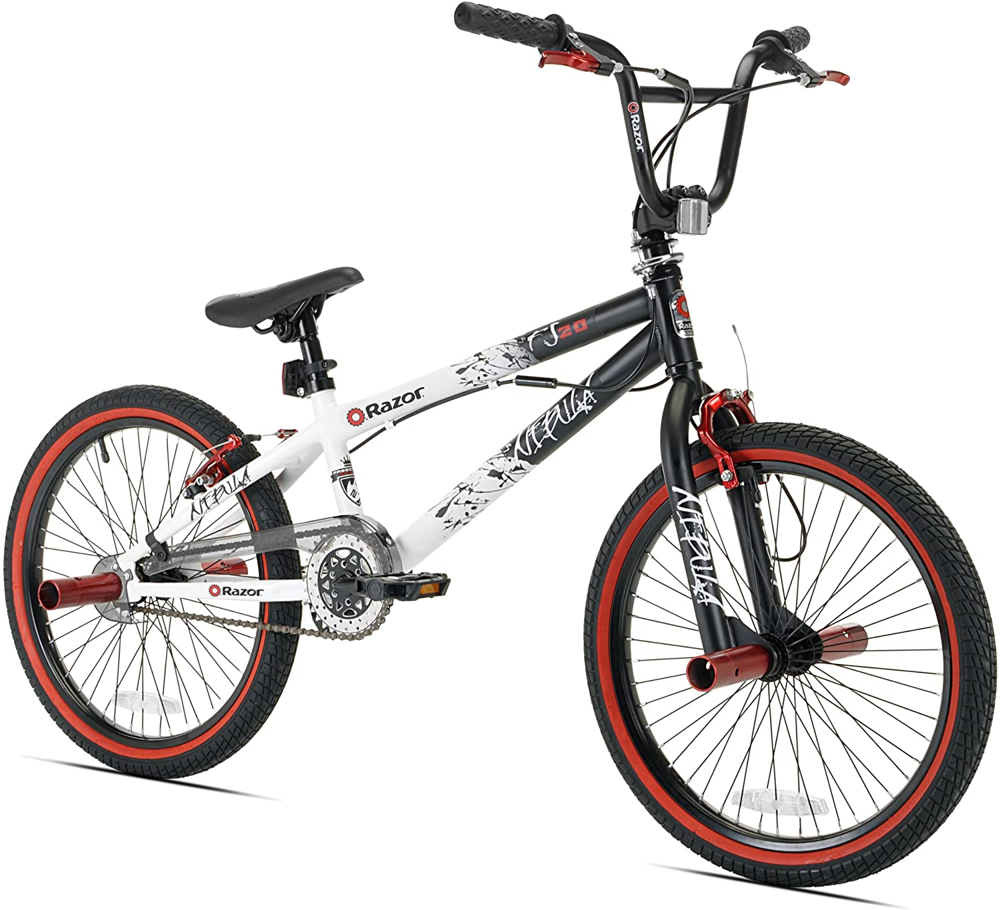

| RODADA |
ESPECIFICACIONES |
PRECIO |
VISTA |
| 20 |
Bicicleta rodada 20 pulgadas estilo montañera, color roja, llantas color negra, doble suspension,18 velocidades. |
$2000 |
 |
| 20 |
Bicicleta rodada pulgadas estilo vintage, color blanco y rosa, llantas color negras y rosas, parrilla incluida,barbitas incluidas, puños de goma color rosa, sin velocidades . |
$2250 |
 |
| 20 |
Bicicleta rodada 20 pulgadas estilo BMX, color negra y blanca con camuflaje y trazos rojos, llantas color negras y rojas, Bazukas rojas incluidas, puños de goma color negro, frenos de rotor tipo BMX . |
$2500 |
 |